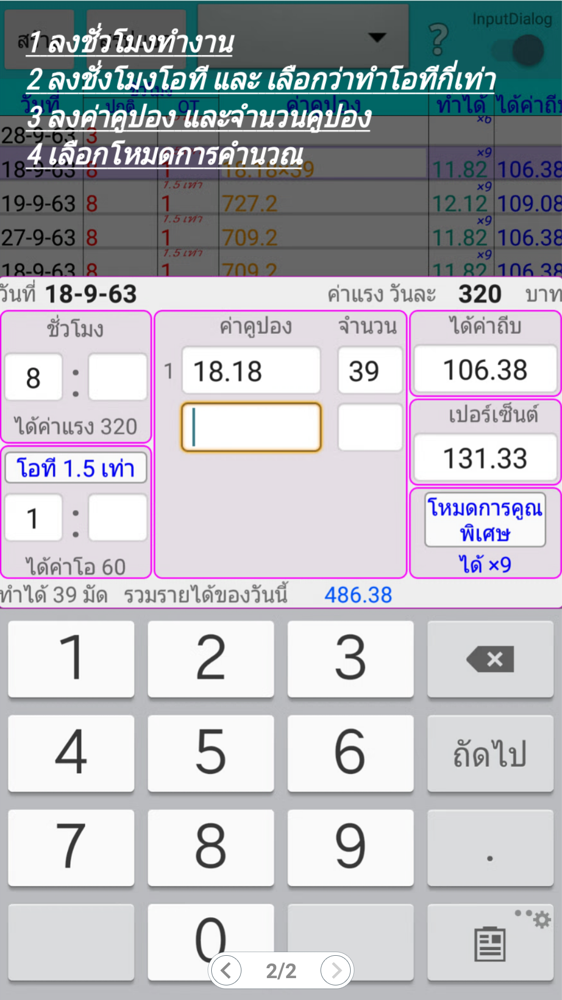
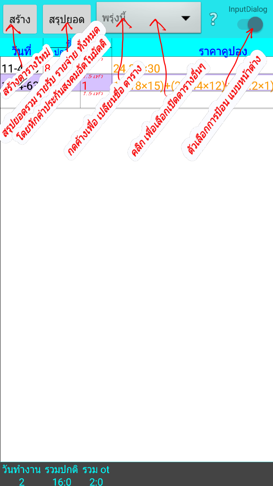
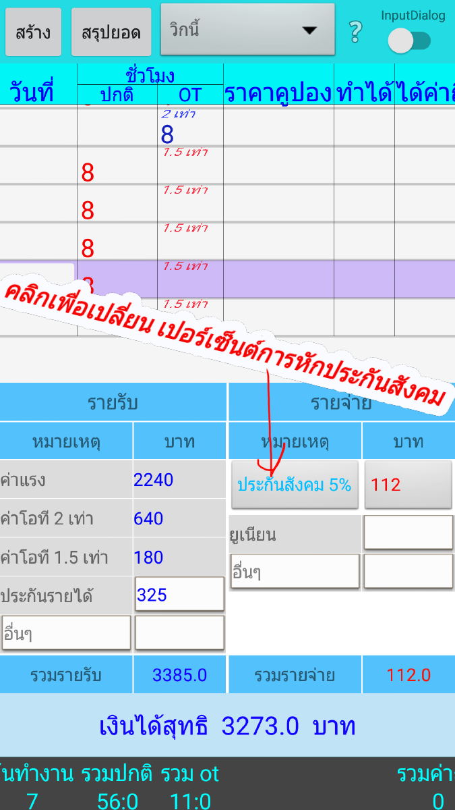

การใช้แอพฯ "คำนวณค่าถีบ"
1 ลงชั่วโมงทำงานปกติในช่อง "ชั่วโมง"
2 ถ้ามีโอทีให้ลงโอทีใน "ชองโอที"
3 ลงราคาคูปองในช่อง "ราคาคูปอง"
4 ลงจำนวนคูปองในช่อง "จำนวน"
เพื่อการคำนวณที่ถูกต้อง เราต้องลงชั่วโมงทำงานก่อนทุกครั้ง
จากนั้นไม่ว่าเราจะลงข้อมูลในช่องใหน ช่องที่เหลือก็จะแสดงคำตอบที่เป็นสัดส่วนที่ถูกต้องออกมา


โควิด-19 กำลังระบาด ต้องการเปลี่ยนการหักเงินค่าประกันสังคม จาก 5% มาเป็น1%

การคำนวณค่าถีบนี้ อาจมีการปัดเศษทศนิยม ที่ไม่ตรงกับห้องแสกนคูปองของบริษัท
แต่จะต่างกันไม่เกิน1บาท แต่ถ้าต่างกันเกิน1 บาท ท่านต้องมั่นใจว่าได้ลงข้อมูลถูกต้องหรือไม่
ถ้าลงข้อมูลถูกต้องแล้ว ให้ท่านทวงถามค่าถีบที่หายไปได้เลย
สูตรการคำนวณค่าถีบที่ใช้ในแอพคือ
การหาค่าเปอเซ็นต์คือ
เปอเซนต์= ((ค่าปองรวมกัน÷60)÷ชั่วโมงทำงาน)×100
ถ้าเปอเซ็นต์น้อยกว่า 101℅ ตัวคูณ=6
ถ้าเปอเซ็นต์ 101℅ -น้อยกว่า111℅ ตัวคูณ=7
ถ้าเปอเซ็นต์ 111℅ -น้อยกว่า121℅ ตัวคูณ=8
ถ้าเปอเซ็นต์ 121ขึ้นไป ตัวคูณ =9
การหาค่าถีบคือ
ค่าถีบ=(นำค่าคูปองมารวมกัน÷60)×ตัวคูณ